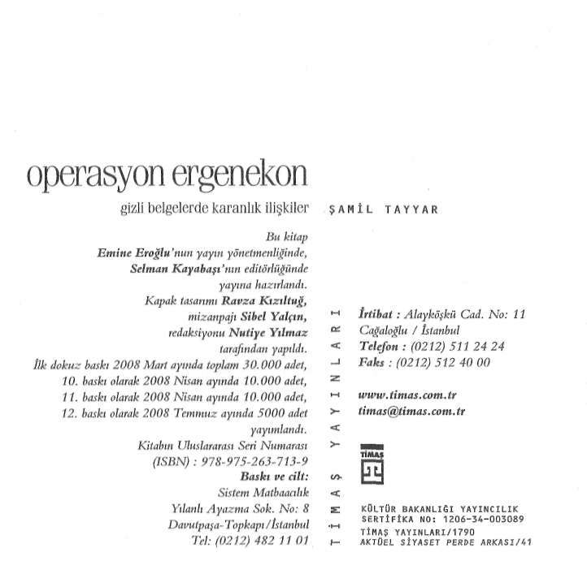
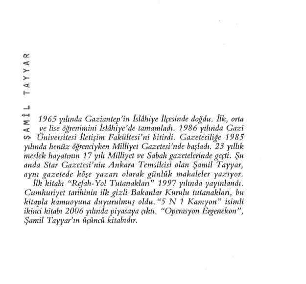
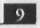
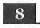

darkmalt1 tarafından taranmıştır
www.cizgiliforum.com

İçindekiler
ÖNSÖZ • 7
SARIKIZ'IN MEKTUBU • 13
ŞEMDİNLİ TUZAĞI • 49
İLK CİNAYET: RAHİP SANTORO • 62
ÇETE OPERASYONLARI SAUNADA BAŞLADI • 65
CUMHURİYET OYUNU • 70
VATANSEVERLERİN AYAK İZİ • 117
İLK BÜYÜK DARBE: ATABEYLER • 123
DİYARBAKIR PROVASI • 143
HABLEMİTOĞLU CEZASI • 145
MALİYE'DE DERİN HESAP M 147
ÇETELER HORTLADI • 150
HRANT DlNK'TE ÇUVALLADILAR • 152
MALATYA VAHŞETİ • 170
ÜMRANİYE ÇÖPLÜĞÜ • 192
600 KİLO PATLAYICI MESAJ MIYDI? • 232
ALTIN VURUŞ ERGENEKON • 235
DAĞLICA İNTİKAMI • 267
İSTİHBARATTA GÜÇ DENGESİ • 286
FOTOĞRAFIN ASLI • 289
İŞTE O TELEFON GÖRÜŞMELERİ • 291
ÖNSÖZ
6 Aralık 1997 tarihi, kendi iradesi dışında gelişse de Recep Tayyip Erdoğan için önemli bir kırılma noktasının yaşandığı gündü. Gerçi o güne kadar Refah Partisi İl Başkanlığı ve İstanbul Büyükşehir Belediye Başkanlığı dönemlerinde, uzun soluklu siyasi yolculuğu için kendisine kitlesel destek sağlamıştı ama başbakanlığa giden yolda kilometre taşları eksikti. İşte o gün, Siirt'te halka Türk milliyetçiliğinin öncü isimlerinden Ziya Gö-kalp'ın şu dizelerini okudu: "Minareler süngü, kubbeler miğfer, camiler kışlamız, müminler asker..."
Bazen "hayır olduğu düşünülen şeyde şer, şer olacağı düşünülen şeyde hayır vardır" derler, tıpkı öyle oldu. Erdoğan, eski TCK'nın o meşhur 312. maddesinden yargılandı. İsnat edilen suç, halkı dil ve din farklılığı gözeterek kin ve düşmanlığa açıkça tahrik etmekti. Cezası kesinleşince Pınarhisar Cezaevi'nde yakla
şık 4 ay mahkûm hayatı yaşayan Erdoğan için o günler, yeni siyasi projeler geliştirdiği günler oldu. Çünkü eş zamanlı olarak yıllardır hizmet verdiği Refah Partisi de sona gelmişti. 16 Ocak 1998'de Anayasa Mahkemesi, RP için kapatma kararı verdi.
Kapatma kararı sürpriz değildi elbette. Sürpriz olan testinin yeni haliydi, çatlamıştı bir kere. Partiyi kapatanlara beddualar ediliyordu ama diğer taraftan yanlışlar sorgulanıyor, geleceğe daha farklı bir perspektiften bakmak isteniyordu. Aynı gün ASKľnin www.cizgiliforum.com

